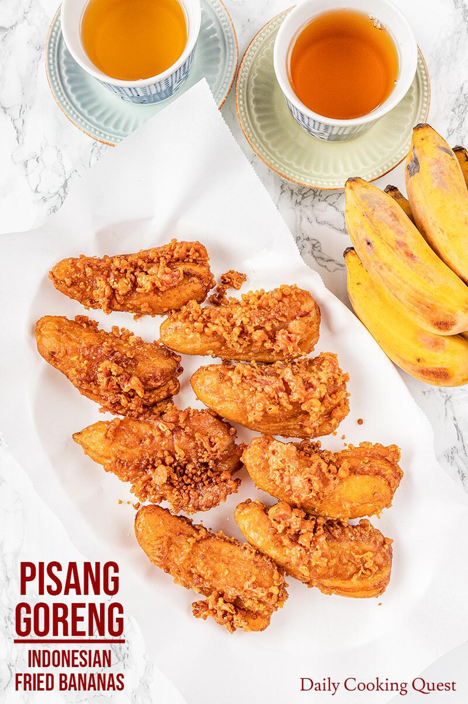

Home
Pisang Goreng

Ingredients
- 1 cups flour
- 2 Tablespoons granulated sugar
- 1/4 tablespoons vanilla powder
- 1/2 cup milk
- 1 egg
- 2 tablespoons butter, melted
- 1 teaspoon rum flavoring
- 4 ripe bananans, sliced
- 2 cups oil for frying
Directions
- Step 1
Combine flour, sugar, and vanilla powder in a large bowl; make a well in the center. Pour milk, egg, melted butter, and rum flavoring into the well; mix until smooth. Fold in banana slices until evenly coated.
- Step 2
Heat oil in a wok or deep fryer to 375 degrees F (190 degrees C).
- Step 3
Drop banana mixture by tablespoon into hot oil. Fry in hot oil until golden brown and crispy, 10 to 15 minutes. Remove bananas from oil and drain them on paper towels. Serve hot.